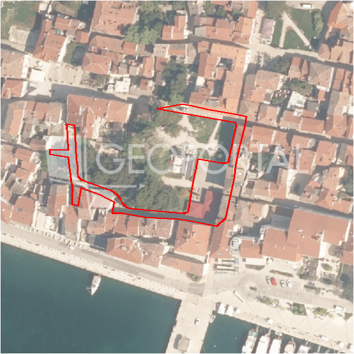

#4172 · PRODAJA PROSTRANOG GRAĐEVINSKOG ZEMLJIŠTA
Baderna, Poreč, Istarska · zemljiste · njuskalo · status active · oglas ↗
Ocjena
- Score
- 65 rule 65 · LLM – · 12.09.2026.
- RLV
- 1,33 M€ (828 €/m²) · ratio 4,76
- Ukupna investicija
- 3,46 M€
- GBP
- 1.286 m²
- Feedback
- –
- CRM
- –
Oglas
- Cijena
- 279.500 € (151 €/m²)
- Površina
- 1.847 m² · DKP 1.608 m² (odstupanje -12,9 %)
- Prodavatelj
- agencija · Family nekretnine
- Prvi put
- 11.09.2026. · zadnje 11.09.2026. · 0 d na tržištu
Povijest cijene
| Datum | Cijena |
|---|---|
| 11.09.2026. | 279.500 € |
Flagovi
zop_70_100 ZOP pojas 70/100 m (−10)zone_uncertainty zona nije pregledana (reviewed: false) (−5)
llm_pending LLM ekstrakcija/ocjena nedostupna
Komponente score-a
| rlv | {'gbp': 1286.352, 'kis': 0.8, 'nkp': 964.7640000000001, 'noi': None, 'rlv': 1330954.8573913048, 'ratio': 4.761913622151359, 'value': None, 'phases': 1, 'profile': 'obala_visestambeno', 'gdv_neto': 5402678.4, 'cost_soft': 128635.20000000001, 'gdv_bruto': 6753348.000000001, 'kis_known': False, 'total_inv': 3460695.9200000004, 'cost_build': 2572704.0, 'cost_other': 463086.72000000003, 'cost_sales': 202600.44000000003, 'demolition': False, 'gbp_source': 'kis', 'rlv_per_m2': 827.7391304347829, 'parcel_area': 1607.94, 'parcelation': False, 'roi_on_cost': 0.5026104807266626, 'profit_at_ask': 1739382.04, 'cost_demolition': 0.0, 'total_inv_phase': 3460695.9200000004, 'parcel_area_effective': 1607.94, 'sale_price_per_m2_nkp': 7000.0} |
| hard | [] |
| info | ['llm_pending'] |
| rubric | {'permits': {'max': 5.0, 'detail': {'permit': 'none'}, 'points': 0.0}, 'location': {'max': 15.0, 'detail': {'source': 'rlv.yaml:istra_zapad/row1', 'sale_price_per_m2_nkp': 7000.0}, 'points': 15.0}, 'physical': {'max': 4.0, 'detail': {'slope_pct': 12.01, 'slope_points': 1.799, 'sea_row1_bonus': True}, 'points': 2.8}, 'liquidity': {'max': 3.0, 'detail': {'n_cuts': 0, 'points_cut': 0.0, 'points_days': 0.008333333333333333, 'seller_type': 'agencija', 'points_fresh': 0.5, 'price_cut_pct': None, 'days_on_market': 1, 'points_private': 0}, 'points': 0.51}, 'rlv_ratio': {'max': 25.0, 'detail': {'rlv': 1330955, 'ratio': 4.762, 'asking_price': 279500.0}, 'points': 25.0}, 'ticket_fit': {'max': 10.0, 'detail': {'asking_price': 279500.0}, 'points': 7.45}, 'zone_quality': {'max': 8.0, 'detail': {'reason': 'zona nepoznata', 'source': 'nepoznato', 'zone_class': None}, 'points': 2.0}, 'profit_potential': {'max': 20.0, 'detail': {'roi_on_cost': 0.503, 'profit_at_ask': 1739382}, 'points': 20.0}, 'price_vs_benchmark': {'max': 10.0, 'detail': {'source': 'auto:Poreč', 'deviation': 0.13, 'ask_eur_m2': 151, 'benchmark_eur_m2': 173.89}, 'points': 6.95}} |
| weights | {'llm': 0.4, 'rule': 0.6, 'model': 0.0} |
| penalties | {'zop_70_100': 10, 'zone_uncertainty': 5} |
| raw_score | 79,7 |
| rlv_notes | [] |
| flag_notes | {'max_gbp': 1286, 'zop_band': '70', 'total_inv': 3460696, 'zone_code': None, 'zone_class': None, 'zone_source': 'nepoznato', 'zone_reviewed': None} |
| caps_applied | [] |
GIS
- Čestica
- k.o. 323748, k.č. 232 (pin_buffer, 0,73); k.o. 323748, k.č. 204 (pin_buffer, 0,55); k.o. 323748, k.č. 4 (pin_buffer, 0,52)
- Zona
- – (–)
- kig / kis / katnost
- – / – / –
- GP / UPU
- – · UPU –
- Pristup / nagib
- unknown · 12,0 % (max 19,8 %)
- More
- 32 m · red 1 · ZOP 70
- Zaštite
- Natura ne · zaštićeno ne · kulturno dobro ne
- Zgrade na čestici
- 0 %
- Match
- 0,73
Karta
Ortofoto (DOF)

RLV kalkulacija — pretpostavke
| gbp | {'value': 1286.352, 'source': 'kis'} |
| kis | {'value': 0.8, 'source': 'default_profila'} |
| sea_row | {'value': '1', 'source': 'gis'} |
| soft_pct | {'value': 0.05, 'source': 'profil'} |
| nkp_ratio | {'value': 0.75, 'source': 'profil'} |
| cost_other | {'value': 463086.72000000003, 'source': 'profil: doprinosi+uređenje po m² GBP, financiranje+rezerva % gradnje'} |
| parcel_area | {'value': 1607.94, 'source': 'dkp'} |
| asking_price | {'value': 279500.0, 'source': 'oglas'} |
| margin_on_cost | {'value': 0.15, 'source': 'profil'} |
| build_cost_per_m2_gbp | {'value': 2000.0, 'source': 'profil'} |
| sale_price_per_m2_nkp | {'value': 7000.0, 'source': 'rlv.yaml:istra_zapad/row1'} |
| transfer_tax_and_acquisition | {'value': 0.06, 'source': 'profil'} |
Ekstrakcija iz oglasa
| access_road | yes |
| parcel_count | 1 |
| slope_mention | ravno |
Benchmarks mikrolokacije
| Vrsta | Vrijednost | n | Od | Izvor |
|---|---|---|---|---|
| land_ask_eur_m2 | 174 | 302 | 11.09.2026. | auto |
| newbuild_sale_eur_m2_nkp | 3.695 | 8 | 11.09.2026. | auto |
Opis oglasa
Poreč je jedno od najpoželjnijih mjests zs život i ulaganje u Istri- Grad bogate povijesti,uređenog urbanog života i iznimne kvalitete svakodnevnice. Spoj mora,prirode,kulture i moderne infrastrukture čini ga idealnim izborom kako za obiteljski izbor tako i za sigurno ulaganje. Blizina svih popratnih sadržaja,izvrsna prometna povezanost te stabilno tržište nekretnina daju Poreču posebnu vrijednost. Prodaje se zemljište sveukupne površine od 1847 m2. Nalazi se u mirnom i uređenom naselju, svega nekoliko minuta vožnje od Poreča, idealno za gradnju obiteljske kuće ili kao investicija. Zemljište posjeduje direktan pristup sa asfaltirane ceste, pravilnog je oblika i okruženje je već formirano - susjedne čestice su izgrađene što budućem vlasniku pruža sigurnost i jasnu viziju prostora. Teren je ravan, uredan i redovito održavan, spreman za realizaciju vaših planova. Mir, privatnost i blizina Poreča čine ovu nekretninu rijetkom prilikom na tržištu jer upravo ovdje možete započeti novu životnu priču. Tražite zemljište koje ima potencijal i osjećaj pravog izbora - možda je baš ovo ono što ste čekali. Zemljište je dobra prilika obzirom da se nalazi u mirnom dijelu Istre, okruženo prirodom i blizinom svih važnih sadržaja, nudi mir i privatnost, ali i izvrsnu povezanost s ostatkom poluotoka. ZA SVE DODATNE INFORMACIJE I RAZGLEDAVANJE, BUDITE SLOBODNI KONTAKTIRATI ME; +385 91 539 6446 edita.premate@family-nekretnine.hr Edita Premate Panić Asistent u posredovanju